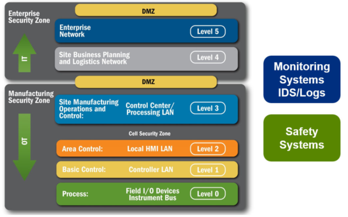

Network Segmentation
Purdue Enterprise Reference Architecture (PERA) Model is suggested as a best practice for segmenting networks
The PERA model segments industrial control devices into hierarchical “levels” of operations within a facility. Using levels as common terminology breaks down and determines plant wide information flow. Zones establish domains of trust for security access and smaller LANs to shape and manage network traffic.
This model groups levels into the following zones for specific functions:
• Enterprise Zone: Levels 4 and 5 handle IT networks, business applications/servers (e.g. email, enterprise
resource planning – ERP) as well as intranet.
• ICS Demilitarized Zone (IDMZ): This buffer zone provides a barrier between the ICS and Enterprise Zones, but allows for data and services to be shared securely. All network traffic from either side of the IDMZ terminates in the IDMZ. No traffic traverses the IDMZ.
That is, no traffic directly travels between the Enterprise and ICS Zones.
• ICS Zone: Level 3 addresses plant wide applications (e.g., historian, asset management, authentication, patch management), consisting of multiple Cell/Area Zones.
• Cell/Area Zone: Levels 0, 1 and 2 manage industrial control devices (e.g., controllers, drives, I/O and HMI) and multi disciplined control application(e.g., drive, batch, continuous process, and discrete).